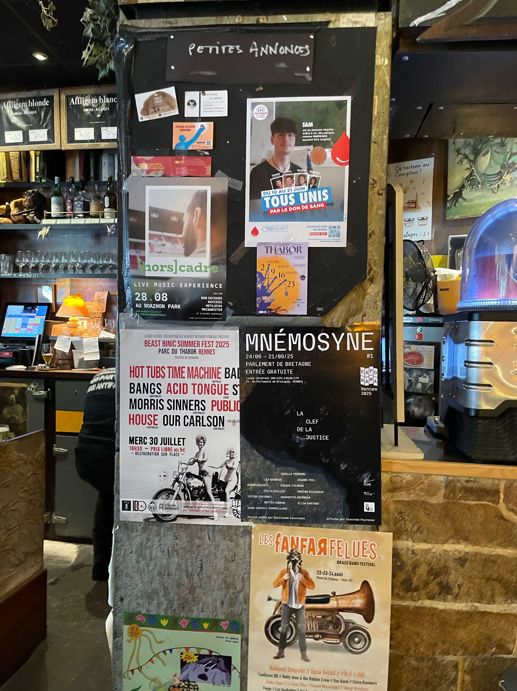
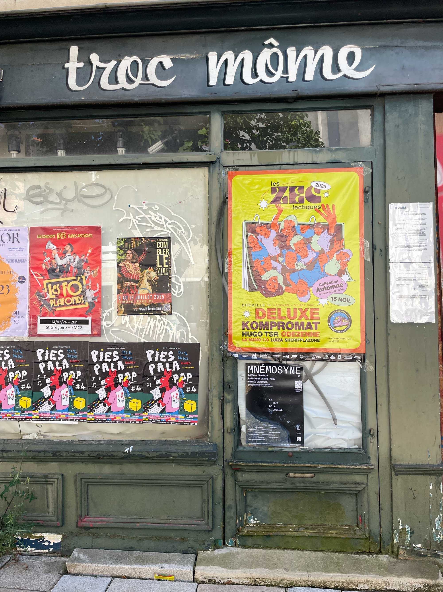

MNÉM0SYNE
À l'occasion du festival Exporama 2025, j'ai été invité par les étudiants des Beaux-Arts de Rennes à concevoir l'affiche pour la première édition de leur exposition Mnémosyne.
Entre convocations mémorielles, recherches et expérimentations, l'exposition regroupait 3 projets de 12 étudiant•e•s de l'ESAAB.
L'affiche a été conçue comme un espace où évoluent à la fois les étudiant•e•s composant le projet, et les différents matériaux convoqués dans les différents projets.
Elle fut exposée dans Rennes et au Parlement de Bretagne, lieu où se tenait l'exposition.



Format 400x600 mm
Un grand merci à Mattéa Conrod, étudiante de 3ème année à l'ESAAB, pour cette opportunité.